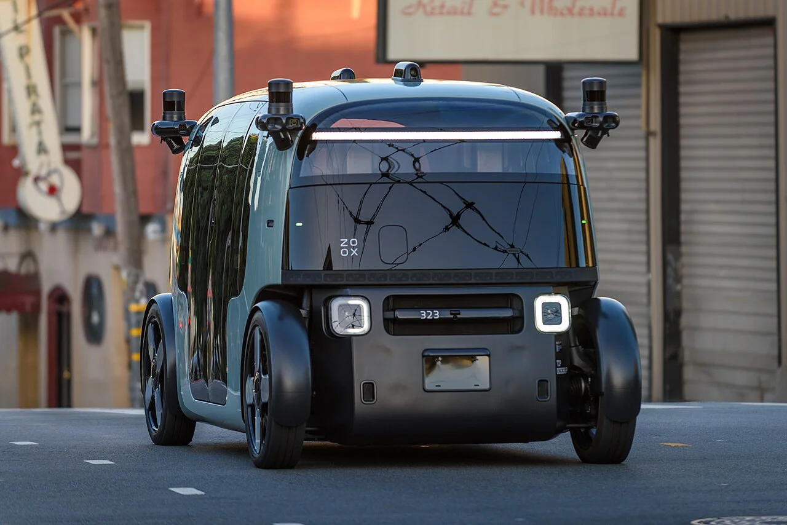
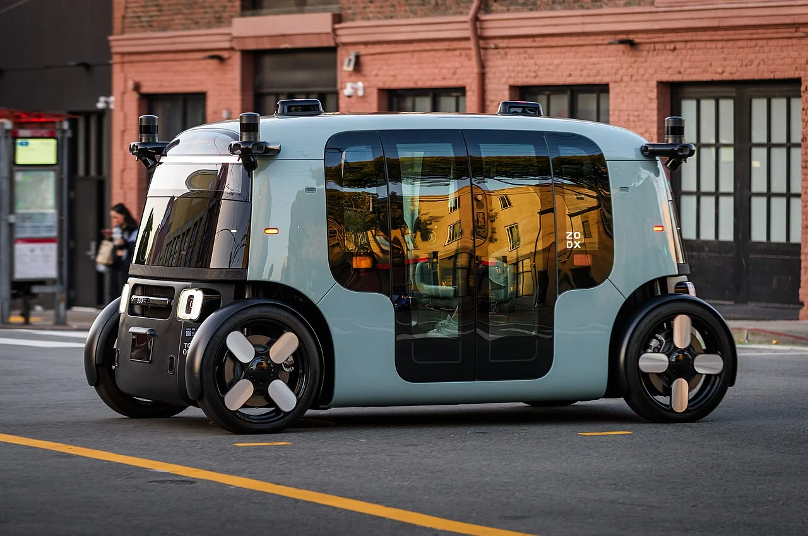
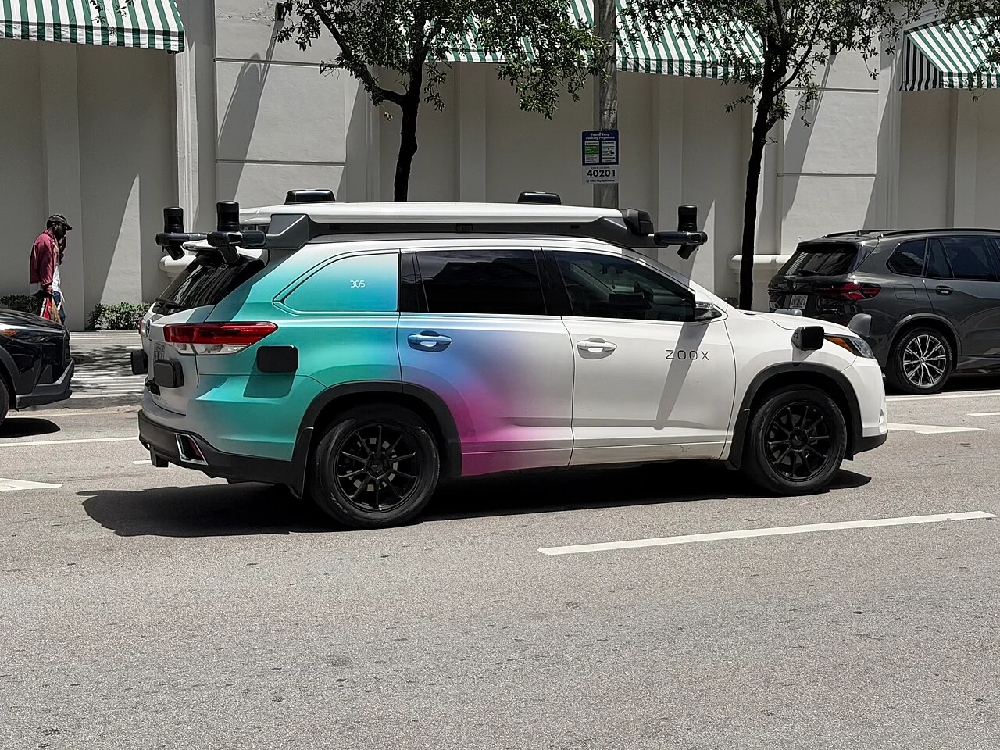
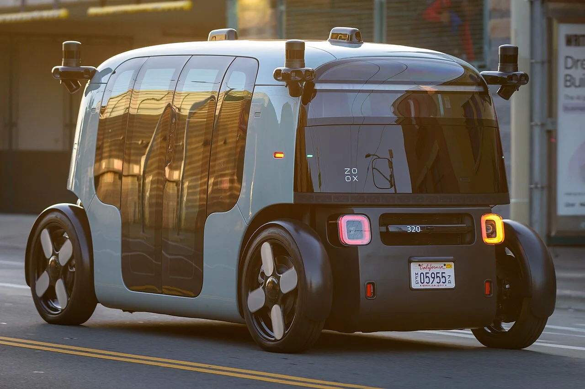

▲ 샌프란시스코 도심을 주행 중인 죽스의 전용 로보택시 정면. 운전석·조향휠·페달이 모두 없고, 차체 곳곳에 라이다·카메라 센서가 둘러져 있다 ⓒ 9yz, Wikimedia Commons (CC BY 4.0)
아마존 산하 자율주행 기업 '죽스(Zoox)'가 미국에서 사상 첫 '운전자 없는 차'의 유료 상업 운행 승인을 받았습니다. 미국 도로교통안전청(NHTSA)은 지난 7월 30일(현지시간) 죽스에 향후 2년간 매년 최대 2,500대씩, 총 5,000대까지 로보택시를 상업적으로 배치할 수 있는 임시 면제(exemption)를 승인한다고 밝혔습니다. 자동차에는 조향휠과 페달 등 운전자용 제어 장치가 반드시 있어야 한다는 연방자동차안전기준(FMVSS)의 일부 조항을 예외적으로 면제한 조치로, 운전자용 제어 장치가 전혀 없는 목적 맞춤형 자율주행 차량이 미국에서 유료 상업 운행 승인을 받은 것은 이번이 처음입니다. 아마존은 2020년 12억 달러(약 1조 6천억 원)에 죽스를 인수한 뒤 자체 로보택시 개발을 이어왔으며, 이번 승인으로 그 결실을 상업화 단계로 옮길 발판을 마련했습니다.
1. 무슨 일이 있었나 — NHTSA, 사상 첫 '운전자 없는 차' 상업 승인
NHTSA는 이번 승인이 "죽스의 기술이 발전함에 따라 진화할 수 있는 강화된 적응형 감독 체계를 전제로 한다"고 밝혔습니다. 면제 대상에는 앞유리 서리 제거·와이퍼, 후방 시야 확보, 조명·제동 장치 등 조향휠과 페달이 있는 일반 차량을 전제로 만들어진 연방자동차안전기준(FMVSS) 8개 항목이 포함됩니다. 승인에는 조건도 뒤따릅니다. 죽스는 사고나 도로 위 부적절한 정차 등과 관련해 규제당국에 추가 보고 의무를 지게 되며, 차량을 원격으로 감독하는 텔레가이던스 운영자는 반드시 미국 내에 있어야 합니다.
이번 승인이 이례적인 이유는 그동안 미국에서 상업 운행 중인 자율주행차들이 모두 조향휠과 페달을 유지한 '일반 차량 개조형'이었기 때문입니다. 반면 죽스의 로보택시는 애초부터 사람이 운전하는 상황을 상정하지 않고 설계된 전용 차량으로, 연방정부가 이런 형태의 차량에 상업 운행을 허가한 것은 이번이 처음입니다. 로이터 등 외신은 이를 두고 "자율주행 업계의 규제 이정표"라고 평가했으며, 승인 발표 이후 아마존 주가도 상승 반응을 보였습니다.
2. '토스터'라 불리는 로보택시 — 마주 보는 좌석, 양방향 주행

▲ 측면에서 본 죽스 로보택시. 앞뒤 구분이 없는 양방향 구조로, 창이 넓어 마주 보는 4인승 좌석 구조를 실내에서 그대로 느낄 수 있다 ⓒ 9yz, Wikimedia Commons (CC BY 4.0)
죽스의 로보택시는 각진 상자 모양 차체 때문에 현지에서 '토스터'라는 별명으로 불립니다. 일반 승용차와 달리 운전석이 따로 없고, 차량 가운데를 마주 보는 형태로 배치된 좌석에 최대 4명이 탑승합니다. 앞뒤 구분이 없는 양방향(bidirectional) 구조여서 방향 전환 시 별도로 차를 돌릴 필요 없이 진행 방향에 따라 헤드램프와 테일램프 역할이 바뀌며 그대로 반대편으로 달릴 수 있습니다. 최고 속도는 시속 75마일(약 120km)이며, 라이다·레이더·카메라 등을 결합한 자체 센서 스택을 지붕과 차체 모서리에 둘러 탑재했습니다.
죽스는 지난 6월에도 상용화를 앞두고 로보택시 디자인을 일부 개선해 공개한 바 있으며, 올해 초 CES 라스베이거스 현장에서는 실제 탑승 체험 프로그램을 운영해 마주 보는 좌석 구조에 대한 관심을 모으기도 했습니다. 운전을 전제로 하지 않는 차량이기 때문에 가능한 파격적인 실내 배치로, 경쟁사들의 개조형 로보택시와 가장 뚜렷하게 구분되는 지점입니다.
3. 운행 지역 & 향후 일정 — 라스베이거스 8월 유료화, 확대는 이제부터

▲ 마이애미 브리켈 지역에서 포착된 죽스의 토요타 하이랜더 기반 시험 차량. 최종 양산형 로보택시 이전 단계에서 자율주행 데이터를 수집하는 테스트 차량이다. 죽스는 라스베이거스·샌프란시스코 외에 오스틴·마이애미·피닉스·댈러스 등 미국 10개 지역에서 테스트를 진행 중이다 ⓒ Phillip Pessar, Wikimedia Commons (CC BY 4.0)
죽스는 현재 라스베이거스와 샌프란시스코에서 무료로 승객을 태우고 있으며, NHTSA 승인에 따라 다음 달인 8월 라스베이거스에서 첫 유료 상업 운행을 시작할 예정입니다. 다만 캘리포니아에서 유료 서비스를 시작하려면 주 차량관리국(DMV)과 공공유틸리티위원회(PUC)의 별도 허가가 추가로 필요해, 샌프란시스코를 포함한 다른 지역으로의 확대는 각 주·지방정부와의 협의 진행 상황에 따라 시차를 두고 이뤄질 전망입니다. 이 밖에도 오스틴, 마이애미, 피닉스, 댈러스, 시애틀, 로스앤젤레스, 애틀랜타, 워싱턴 D.C. 등에서 시험 운행을 진행하며 총 10개 미국 도시에 거점을 넓혀 놓은 상태입니다.
생산 측면에서 아마존은 캘리포니아 공장에서 연간 최대 1만 대 규모의 로보택시를 생산한다는 목표를 갖고 있는 것으로 알려졌습니다. NHTSA의 이번 승인 자체가 연간 2,500대 한도를 못 박아 둔 만큼, 실제 도로 위 대수가 승인 상한까지 차오르기까지는 시간이 걸릴 수밖에 없습니다. 다만 이번 승인은 어디까지나 연방 차원의 규제 장벽을 해소한 것으로, 각 지역 서비스 개시는 주별 인허가 절차를 하나씩 통과해야 하는 별개의 과제로 남아 있습니다.
| 구분 | 죽스(Zoox) | 웨이모(Waymo) | 테슬라(Tesla) |
|---|---|---|---|
| 차량 형태 | 전용 설계, 조향휠·페달 없음 | 재규어 I-Pace 개조, 조향휠 유지 | 모델 Y 기반, 조향휠 유지 |
| 연방 규제 상태 | FMVSS 일부 면제, 유료 운행 승인 | 기존 FMVSS 준수(면제 불필요) | 기존 FMVSS 준수(면제 불필요) |
| 주요 운행 지역 | 라스베이거스·샌프란시스코 등 10개 도시 | 피닉스·오스틴 등 다수 도시 | 오스틴 등 텍사스 일부 지역 |
| 규모 | 승인 한도 연 2,500대(2년간 최대 5,000대) | 수천 대 규모 상업 운행 중 | 수십 대 규모 시범 운행 |
4. 웨이모·테슬라와 다른 길 — 그리고 남은 안전 숙제

▲ 죽스 로보택시의 후면부. 캘리포니아 번호판을 달고 시험 운행 중인 모습으로, 일반 승용차를 개조한 경쟁사 차량들과 실루엣부터 뚜렷하게 구분된다 ⓒ 9yz, Wikimedia Commons (CC BY 4.0)
현재 미국 로보택시 시장의 선두주자인 알파벳 산하 웨이모는 재규어 I-Pace 전기 SUV를 개조한 차량으로 조향휠과 페달을 그대로 유지하고 있어 이번과 같은 별도의 연방 면제 없이도 이미 여러 도시에서 수천 대 규모의 유료 서비스를 운영 중입니다. 테슬라 역시 현재 오스틴 등 텍사스 일부 지역에서 운영 중인 로보택시가 모델 Y를 기반으로 조향휠을 유지한 형태이며, 향후 조향휠과 페달이 없는 '사이버캡(Cybercab)'을 도로에 투입하려면 테슬라도 죽스와 마찬가지로 NHTSA의 별도 승인을 받아야 하는 상황입니다. 즉 이번 승인은 로보택시 대수 경쟁을 넘어, '운전자 없는 차량 설계' 자체를 연방정부가 처음으로 인정했다는 점에서 테슬라를 포함한 후발주자들의 규제 대응 방향에도 영향을 줄 수 있는 사안입니다.
결국 이번 승인은 죽스에게 '운전자 없는 차량도 유료로 사람을 태울 수 있다'는 법적 근거를 마련해준 중대한 이정표이지만, 실제 서비스가 얼마나 빠르게 웨이모 수준의 규모로 확대될지는 주별 인허가 속도와 안전 이력 관리에 달려 있습니다. 아마존이 자율주행 로보택시 시장에서 웨이모를 얼마나 빠르게 추격할 수 있을지, 향후 몇 달간의 라스베이거스·샌프란시스코 서비스 확대 속도가 첫 시험대가 될 전망입니다.